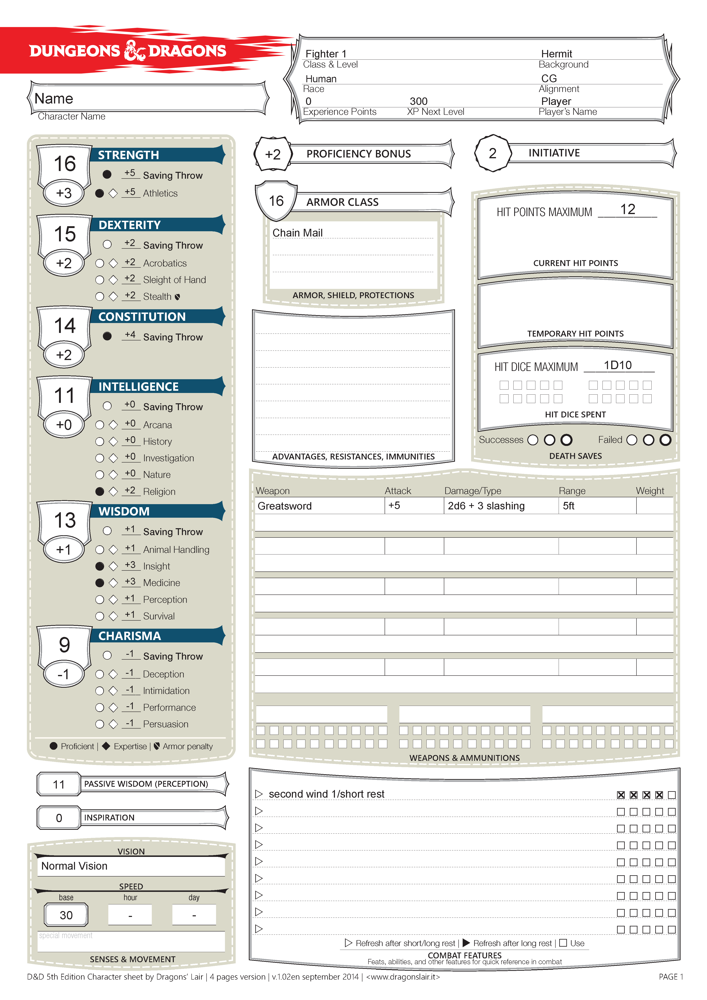
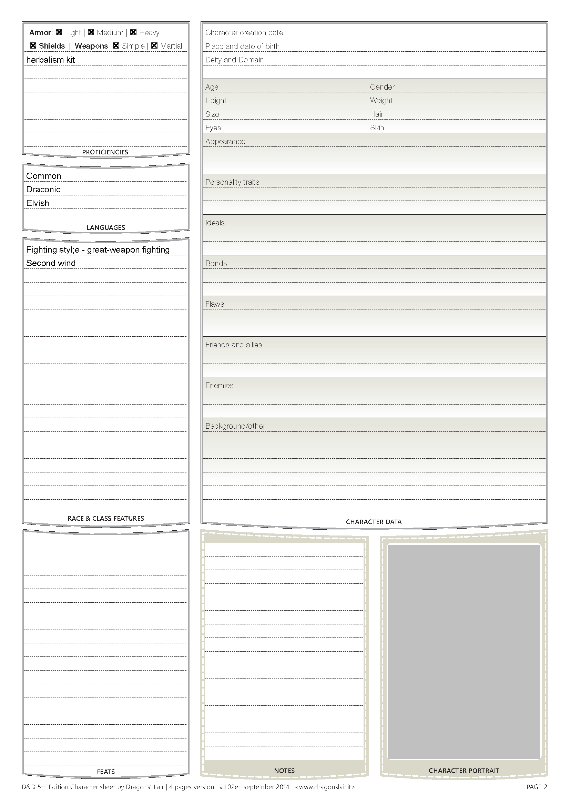

So you decided you wanted to create your own character. Well, there are two ways I can provide in helping you make a character. one, you can check out the video guide posted below by a channel named The Dungeoncast, for a quick look into how to make a character. and two, you can read my incoherent rambling about how everything works. Trust me on this, watch the video, it'll explain things in less time.
Well, I guess my warning on spending more time isn't a bother to you. no matter, I'll walk you through the steps through example. In this example we are going to be making a human fighter. Human has one of the easiest to understand abilities, they just get a +1 to all 6 stats. The stat's are often described like this.

Now that that's covered we are going to use the standard array to define our stats, which is the pre-defined set of numbers of 15, 14, 13, 12, 10, and 8. since we are going to use the big, heavy swords I'm going to place the highest stat, 15 into strength, which when added to the +1 we get from being human we get a 16, which has a bonus of +3 as per the player's handbook on page 13. There are also two other ways to generate stats, but those you can read from page 13 as well. anyways back to placing stats. lets put the 14 into dexterity and the 13 into constitution, which becomes 15 and 14 respectively, resulting in both of them having +2 bonuses. because this character is a big buff dude who only wants to fight i'm going to place the 8 into his charisma, resulting in a 9, which has a bonus of -1. the other two, 11 and 10 will go into wisdom and intelligence respectively resulting in 13 wisdom, +1, and an 11 int, +0.
After that we need to decide on what we are going to do for equipment. Since i'm big and burly, i'm going to wear chain-mail as well as wield a greatsword. this means I get a static armor class, which is explained in the how to play page, of 16 as well as an attack that does 2d6 + 3 damage. the bonus to hit would be +5 due to proficiency bonus being +2. There is a whole lot of other equipment, which is not important to the core of the character and in a lot of games goes unused, so I won't be covering those.
Next is to determine my starting health. this is found by looking at your class details. in the case of fighter, it's a D10, that I am rolling. Though, the first level is special in that you always take the max you can roll on your die and add your constitution modifier. in my case My health is 10 + 2 = 12.
Now we have some abilities to figure out, in the case of fighter, they have two they get at level 1. These are second wind, which is just a healing effect that can be used once per short rest, which is defined as 1 hour of continuous rest, and the ability fighting style. This isn't just a simple write it down and done, it's actually a choice. in my case I'm using a great-weapon, so the obvious choice would be great-weapon fighting.
We also need to choose some skills, these things are based on both your background and the class you chose. in the case of fighter you can choose two skills from the list of Acrobatics, Animal Handling, Athletics, Histopry, Insight, Intimidation, Perception, and Survival. I will choose Athletics and Insight.
last but not least we need to figure out what backgroud we come from. This can be found on page 125 of the players handbook. I'm going to choose Hermit for my background. It does include some stuff, like skill proficiencies, and a (not always useful) ability. The skills that Hermit provides is Medicine and Religon.
Now there is some stuff I didn't mention, such as defining what languages you know, or other small (cosmetic) abilities from your race. But here is the completed character sheet for you to study to your hearts content.
 